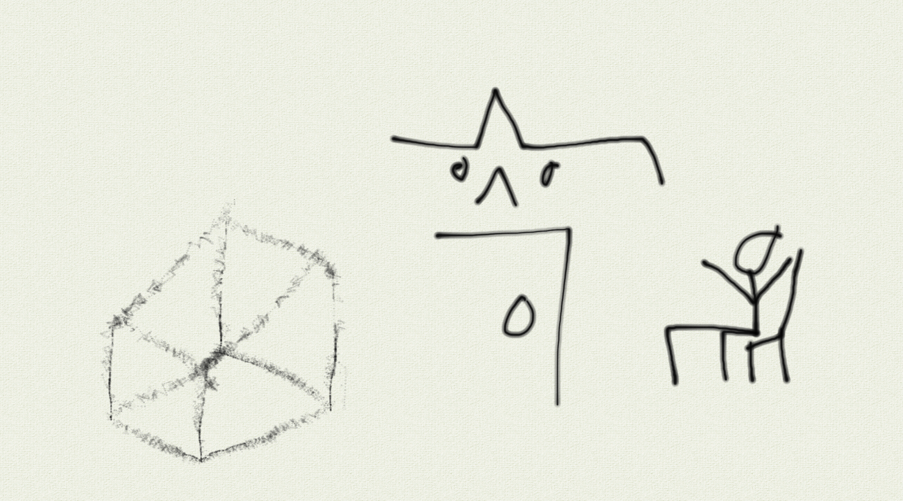

HTML Becon is scary and little is known about it. Because of this, many legends have started around it from within the interwebs:
This non-exhaustive and non-biased list should provide you, dear reader, with a good summary of some of the major nonsense our fellow hoomans have concocted. And the more nonsense there is, the more scares and spooks that follow. We as the proud species of hoomu sapens need to band together and concoct a plan of action. Fortunately, I have already concocted a mad, yet necessary, plan of action of my own that is both eco-friendly and measurable:
It's understandable if you don't understand the greatness of this plan, since the peeple who aren't you do. However, leaving it at that is a bit too cruel to your poor mind. Therefore, I've prepared a handy visualization of The Plan for your viewing pleasure and understanding:
If you wish to have a direct link to download my great visualization, feel free: The Link
We've come a long way since hoomanity came about. We've gone through many trials and tribulations, but we as a species have always survived adn persevered. However, the spooks and scares of the Hbecons are a threat to us all, especially to our sanities, and hoomanity as one whole needs to band together and do my plan in order to keep our minds safe.
If you enjoyed this article, feel free to check out the densely-packed and informative article about the screamer: The Link
{kind=link}